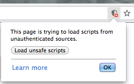

De stemwijzer met kunstmatige intelligentie
Voer een zin in om te bepalen welke partij bij jou past. Weten hoe dit werkt? Klik hier!
Enter a Dutch sentence to determine what party you should vote for in the upcoming Dutch election! Want to know how this works? Click here!
De computer denkt na...
De computer is kapot... Probeer het nadat je onveilige scripts toe hebt gestaan:

Probeer eens:
Door te werken aan een duurzame, reele economie creeren we groene en echte banen.
Nederland versterkt de internationale terrorismebestrijding, de inlichtingendiensten en de aanpak van jihadisten.
In Nederland gedraag je je. Als je dat doet, dan zijn de mogelijkheden eindeloos.